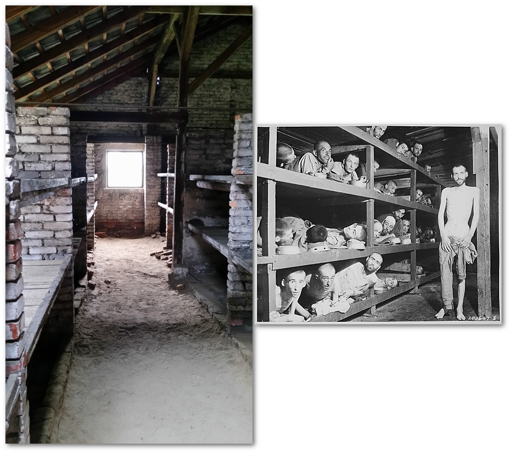
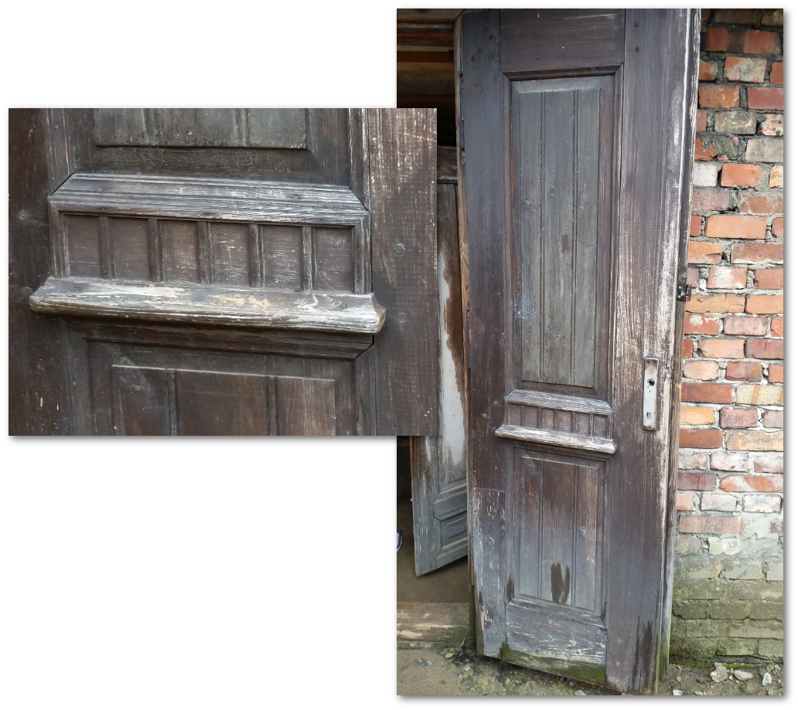
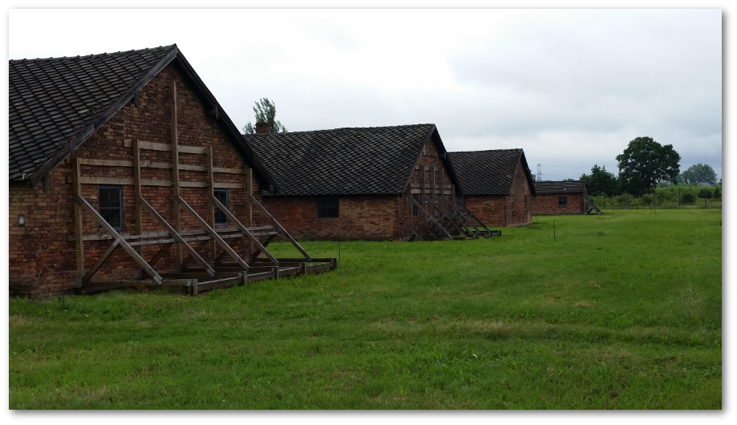

Auschwitz I and II (Birkenau): Some thoughts on a tour
Posted: Jul 23, 2016 15:07;
Last Modified: Jul 23, 2016 16:07
Keywords:
Last week, I was in Krakow for DH 2016. Because it is so close to Auschwitz, I took a day trip to visit the camp.
Contents
Mixed feelings about “touring” a concentration camp
I had very mixed feelings about the whole idea. On the one hand, it seems almost an obligation. As I’ve written of the Diary of Anne Frank: “the enormity of Nazi crimes requires documentation. We want and need first-person accounts of what happened to keep reminding us that it in fact did happen” (54).
But on the other hand, there is also something off-putting about treating a concentration camp as a “local attraction.” It is easy for such things to become a notch in the traveller’s belt, or another pilgrim’s pin on the Wife of Bath’s cape:
And thries hadde she been at Jerusalem;
She hadde passed many a straunge strem;
At Rome she hadde been, and at Boloigne,
In Galice at Seint-Jame, and at Coloigne.
She koude muchel of wandrynge by the weye.
I was also not sure how I’d take it emotionally. Over the years when I’ve worked with the Diary of Anne Frank, I’ve found it at times very emotionally draining. I wasn’t sure how I’d react in this case. I’ve always found the cruelty of the whole system terribly overwhelming.
It was the right thing to do
Having been now, I can say that I’m glad I went. Or perhaps rather than glad, I can say that it was the right thing to do. I found some parts fairly overwhelming—particularly the various photos and discussions of how children were treated—but actually fewer than I thought. Perhaps because I’d heard before of the more formally striking parts (my parents visited Auschwitz in the early 1980s before the wall fell and I remember their accounts of the hair and the shoes), some of the parts that were intended to be most intense affected me less than I’d thought. But I also have an even greater respect for the few Holocaust (and Auschwitz) survivors I have met over the years—one thing I had not realised was just how short the average prisoner who was selected for work survived in the camps (if I had to guess from the material, I saw, perhaps 3 to 6 months); I can now even less imagine what it took to survive that horror!
Our tour itself was decent enough and sensitive to the nature of the monument. The guide was very young and didn’t know a lot more than was posted on the signs, but she handled the material well (it must be horribly draining to be a guide for such tours). I think in retrospect that I’d have preferred to wander around on my own, but it was so crowded I was glad for the direction.
Real horror is in the ordinary things
I did feel that it was too bad that our tour at least took us to the worst buildings in order to show what living conditions were like for the inmates: at Auschwitz, we were told, the only dormitory building that was preserved in its original state was the camp prison (i.e. the place where those singled out for extra punishment or execution were placed); at Birkenau, the only barracks we went inside were the women’s “death barracks” (i.e. the barracks where women were placed who were about to be executed). I thought this was too bad because it was clear that just how terrible things were did not need emphasing via a demonstration of the worst-of-the-worst. Given how little time most prisoners survived at these camps, it is clear that the regular dormitories were also terrible. I think the memory of the camps would be better served by emphasising the extraordinariness of the ordinary experience in the camps rather than the even more terrible.
And in fact, it was the ordinary that was most moving for me throughout my tour. In the dorms, for example, it was not the special standing cells or other tortures in the “prison” barracks that I found the most moving, but rather the bunks in Birkenau: I was immensely moved to see in person those famous bunks from the liberation pictures:

Bunks from a women’s dorm in Birkenau compared to war-time liberation photo (© 2016 CC-0)
Other things I found not moving but perhaps unnerving were the details of the buildings. For example, the fact that the door to the Birkenau “death barracks” had colonnading on their doors:

Colonnading on Birkenau “Death Barracks” door (© 2016 CC-By)
Or that the roof joists on the same buildings ended with a chalet-style finial:
Traditional joist finials on Birkenau “Death Barracks” (© 2016 CC-By)
Who does that kind of thing at a death camp? On the one hand, the camps were run in ways that denied the prisoners even basic recognition of their humanity. On the other hand, they had nice doors. The contrast between the human continuity of these architectural details and the conscious inhumane cruelty with which the inmates inside these buildings were treated was horrific to me.
But finally, it was in the architecture that I got my schadenfreude. Several friends who visited the camps before me told me that what they had found most horrific was the brutal efficiency of it all. How, especially at Birkenau, murder had been industrialised and made efficient. What I found most impressed by, in the end, however, was the extent to which the barracks are now in need to repair only 70 years after the war:

Shoring up Birkenau barracks (© 2016 CC-By)
Some Thousand Year Reich!